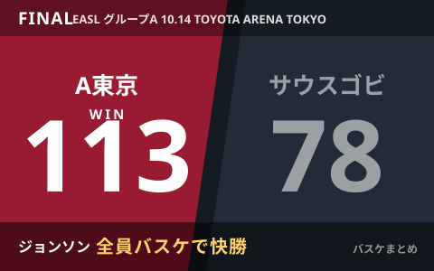

アルバルク東京、EASL開幕戦をサウスゴビに113-78で快勝 主力2人欠く9人体制で"全員バスケ"

アルバルク東京は10月14日、東アジア・スーパーリーグ（EASL）グループAの開幕戦でサウスゴビ・ブロンコス（モンゴル）とホームで対戦し、113-78で快勝しました。コンディション不良でテーブス海と平岩玄の主力2人を欠く9人体制での試合となりましたが、第1クォーターから35-12とリードを広げる好スタート。終盤にはベンチ陣も含めた"全員バスケ"で得点力が落ちない内容を見せ、初戦を白星で飾りました。
1Qから35-12、小酒部のドライブで先制
試合は小酒部泰暉のドライブで先制したアルバルク東京が主導権を握る展開となりました。第1クォーターを35-12で終えると、そのまま試合を優位に進め、最終的に113-78の35点差で勝利。第3クォーターには相手の3ポイントシュートが当たり一時点差を縮められる場面もありましたが、ジョンソンの3ポイントで再び落ち着きを取り戻し、大きくリードを守り切りました。
| 項目 | 内容 |
|---|---|
| 最終スコア | アルバルク東京 113 - 78 サウスゴビ・ブロンコス |
| 第1クォーター | 35-12（A東京リード） |
| 出場可能人数 | 9人（テーブス海・平岩玄がコンディション不良でベンチ外） |
主力2人欠くも、ベンチ含めた"全員バスケ"で乗り切る
開幕戦を前にテーブス海と平岩玄がコンディション不良でベンチ外となり、9人体制での試合となりましたが、先発・ベンチの区別なく得点が落ちない内容で乗り切ったことが報じられています。ロスターの一部を欠く厳しい条件のなか、初戦をしっかり白星で飾れたことは、グループAでの今後の戦いに向けて好材料と言えそうです。
EASLとは
東アジア・スーパーリーグ（EASL）は、日本・韓国・台湾・フィリピン・モンゴルなどのクラブが参加する国際クラブ大会です。アルバルク東京は国内のB.PREMIERと並行して戦いを進めることになり、過密日程のなかでのコンディション管理も注目されるシーズンとなりそうです。
Q. 「全員バスケ」とは？
A. 特定のスター選手に頼らず、先発・ベンチを問わず全員が役割を果たして得点力やディフェンス強度を落とさないチームスタイルを指す言葉として使われています。
出典：BASKET COUNT「ロスター10人の緊急事態もなんのその、アルバルク東京が全員バスケでサウスゴビ・ブロンコスに35点差の快勝」／時事ドットコム「A東京が初戦白星 バスケ東アジアSリーグ」ほか
https://basket-count.com/article/detail/276643
https://jiji.com/jc/article?g=spo&k=2026101401278&m=rss